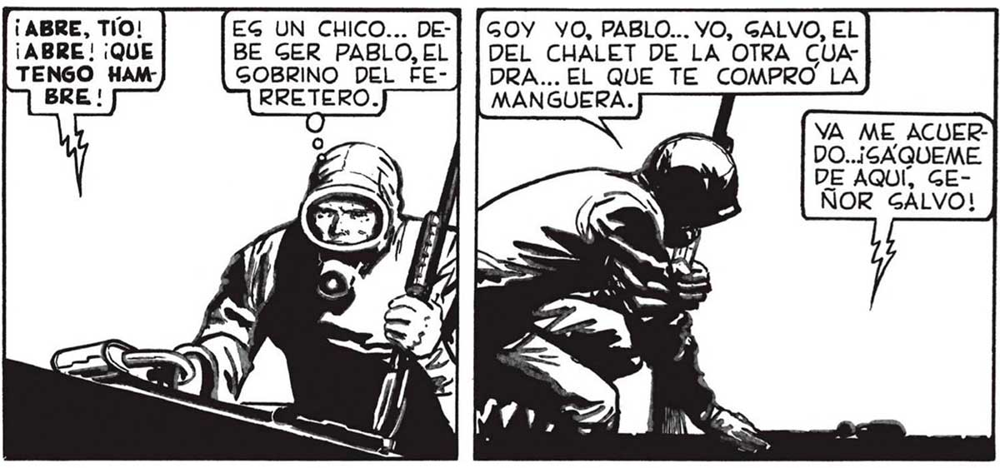
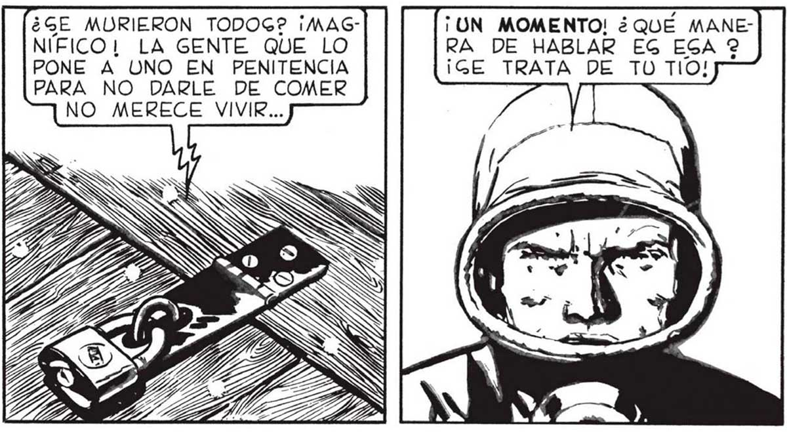

¡ABRE, TIO! ¡ABRE! ¡QUE EG UN CHICO... DEBE GER PABLO, EL GOBRINO DEL FEGOY YO, PABLO... YO, GALVO, EL DEL CHALET DE LA OTRA CUADRA... EL QUE TE COMPRO LA MANGUERA. YA ME ACUERDO..¡GAQUEME DE AQUÍ, GEÑOR GÁLVO! ¿QUIÉN TE ENCERRO? ¡MI TÍOL¡ROMPÍ UNA DAMAJUANA CON GOLVENTE Y ME ENCERRO GIN GIQUIERA DAR ME DE CENAR! ¡GÁQUEME GEÑOR GALVO!¡ O DIGALE A ÉL QUE ME SAQUE! EGCUCHA BIEN, PABLO... TD TIO NO PUEDE VENIR... HA PAGADO ALGO TERRIBLE... TENDRAG QUE HACERTE A LA IDEA DE QUE_NO LO VERAG NUNCA MAC... NIA EL NIA LOG ¡UN MOMENTO! ¿QUÉ MANERA DE HABLAR EG ESA 2 ¡GE TRATA DE TU TIO! ¿GE MURIERON TODOG? ¡MAGNIFICO! LA GENTE QUE LO PONE A UNO EN PENITENCIA PARA NO DARLE DE COMER NO MERECE VIVIR... ¡QUE TÍO NI QUE CHICO MUERTO! EL DECIA QUE ERA MI TIO PARA HACERME TRABAJAR DE BALDE...¡ PERO ERA TAN PARIENTE MIO COMO UGSTED, GENOR GALVO! YO NO TUVE NUNCA A NADIE... ¿PERO QUE LEG PAGO? ¿DE QUE MURIERON? ¿COMIERON MORRONEG? NADIE SABE BIEN LO QUE PAGA, PABLO. PERO HAY ALGO EN EL AIRE QUE MATA APENAG LO TOCAA UNO. AUNQUE NO QUIERAG A TU TIO, TÓ ESTAS VIVO PORQUE ÉL TE ENCERRO AHÍ... AAA RR ¡Gl NO ME GACA PRONTiro INDUDABLEMENTE, PABLO NO ERA IMPREGIONABLE. MEJOR IMITAR GU GENTIDO PRAC, Mn Rad ai TENDRAG QUE AGUANTAR UN POCO MAG, PABLO. Gl TE GACARA AHORA MORIRIAG EN GEGUIDA. PERO VOLVERE PRONTO CON LO NECEGARIO PARA SAL VARTE. A me r m7 ] il ) mn 81 M0 A PABLO. DE PAGO, APROVECHARÉ EL E VIAJE PARA LLEVAR LO QUE PUEDA. , ——l a VOLVÍ” AL GALON DE VENTAG DE LA FERRETERÍA Y ... : 4 FAVALLI GABRA, GEGURO, COMO GALVAR EEN ' O - pi > . TO NO EGTARÉ VIVO MUCHO TIEMPO! ¡TENGO HAMBRE, GEÑOR j Y 0-3 . CARGUÉ DE PRIGA UNA BOLGA CON UN PAR DE has EGCOPETAG, ASAS, PILAG a Le e ELÉCTRICAS, Lo DE E Y GALI <P á E A AS. e: LA CALLE. De NUEVO ME ENCONTRE EN MEDIO DE AQUEL DEGOLADO PAIGAJE DE MUERTE. LA NEVADA MORTAL, TENUE Y EGPANTOGAMENTE BELLA, GEGUÍA CAYENDO. | ' Ll Ú Y 49

